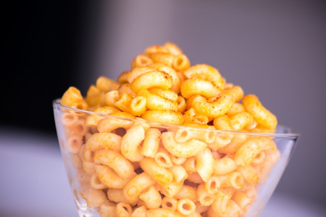

Description
This is a personal favorite recipe and makes for a creamy and rich mac and cheese that is delicious and pairs
well with other hearty dishes.
Ingredients
- 8 oz block of Colby/Montery Cheese
- 16 oz Box of Elbow Macaroni
- Milk or Cream
- All Purpose Flower
- Salt
- Pepper
Steps
- Set a large saucepot of water onto the stove on high heat.
- Season the water with a generous helping of salt and pepper.
- Dice the cheese block into cubes or grate the block
- Once water has reached a boil, pour in your box of macaroni into the water
- After 8 to 10 minutes, strain the macaroni into a collander and swirl in the collander until water is drained
- Pour the macaroni back into the sauce pan and turn the heat on low. Add cheese and about a third of a cup of cream and a quarter cup of flour.
- Stir continuously until cheese is melted and mac is creamy. Add more cream as needed and flour if cheese begins to curdle.
- Season with salt and pepper to taste